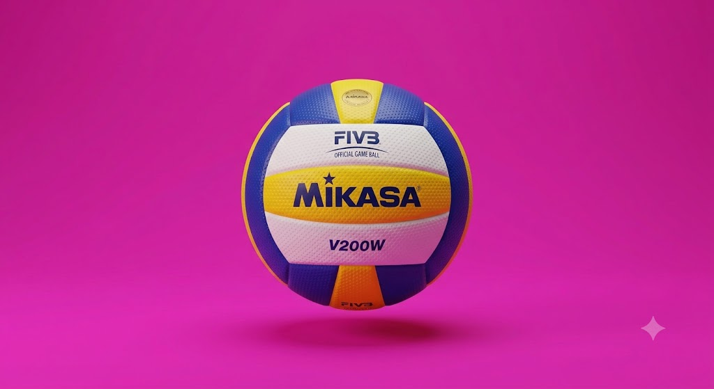

O que é vôleibol?
O vôleibol é um esporte rápido e muito focado em estratégias, leitura e entrosamento.
No vôleibol existem 5 posições: Levantador, líbero, central, ponteiro e oposto.
O nível mundial de vôlei é absurdo, com jogadores excepcionais como Yuji Nishida, Darlan Souza